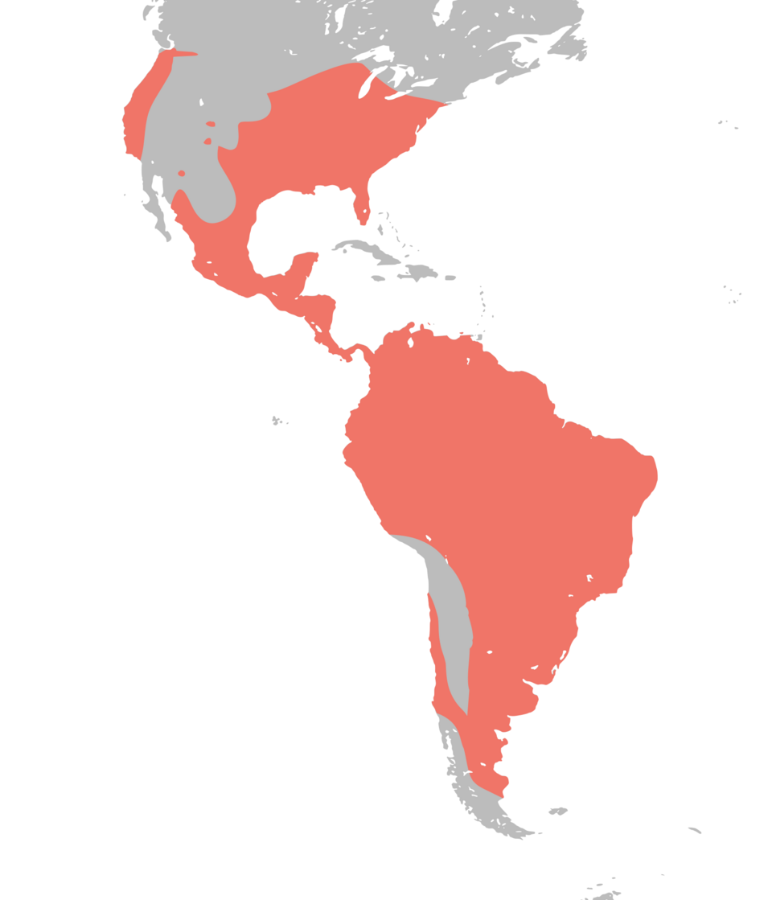

Quick Facts
- Size: 14-18 inches
- Weight: 4-14 pounds
- Lifespan: 2-4 years
- Conservation Status: Least Concern
- Range: North and South America
Key Nighttime Adaptations
Opossums have excellent night vision and a keen sense of smell, which help them navigate and forage in the dark.
Diet
Opossums are omnivorous, feeding on fruits, insects, small animals, and human food scraps.
Role in Ecosystem
Opossums play a role in controlling insect and rodent populations and contribute to the ecosystem as scavengers.
Fun Fact: Opossums are known for "playing dead" as a defense mechanism against predators.


Light Pollution's Effect on Opossums
Light pollution can disrupt the nocturnal behavior of opossums, affecting their foraging and mating activities. Artificial lighting may also increase their vulnerability to predators.